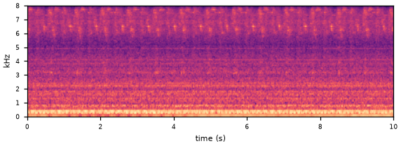
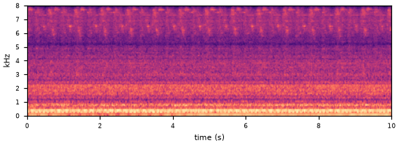
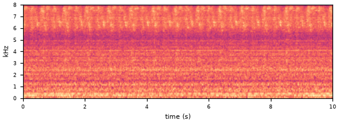
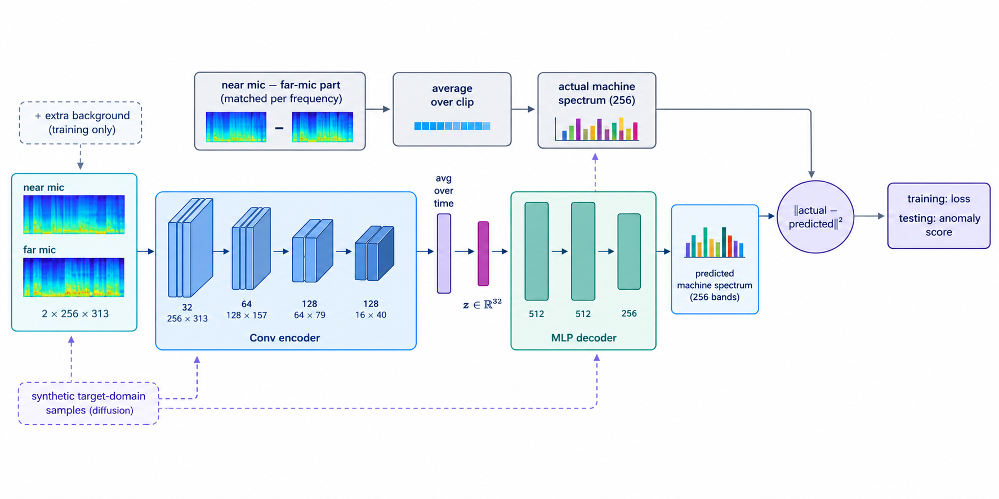
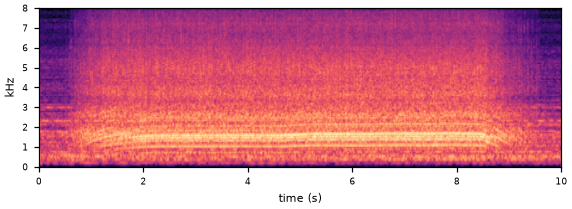
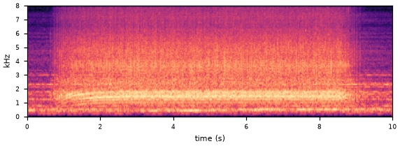
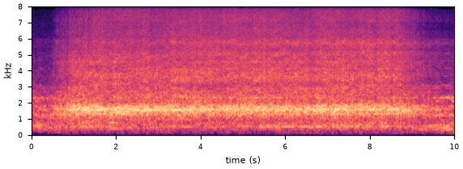
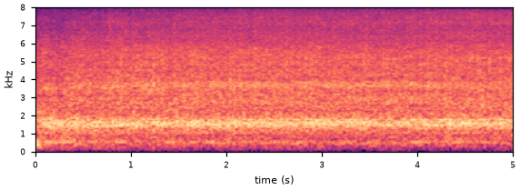
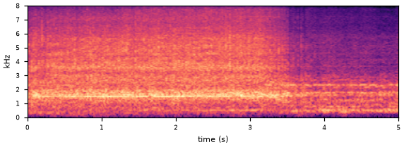
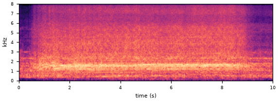

1The task
Every clip has two microphones: one next to the machine, one farther away that hears more factory noise. Models may only train on normal sounds, and the evaluation machines are unseen during development.
2Key idea: subtract the far microphone
The far mic hears mostly the factory. For every frequency we find how the far-mic signal shows up in the near mic (one least-squares gain per frequency, per clip) and subtract it. What's left is mostly the machine itself.



All clips on this page are loudness-normalised for listening. The same subtraction is used everywhere below: as the autoencoder's target, as input to pretrained encoders, and as training audio for the generator.
3Our model: a noise-aware autoencoder
The encoder sees both microphones (with extra background mixed in during training, so it learns to ignore noise) and squeezes the clip into 32 numbers. The decoder must predict the clip's averaged near-minus-far spectrum. The anomaly score is how far that prediction misses. ~0.7 M parameters, trained from scratch on all 1,000 normal clips.

Development set (Ω per machine)
Evaluation set (official score, %)
4What the data told us
Each idea was first tested with a quick probe (seconds to minutes) on all development machines. The ones below shaped the direction most.
Machine faults change the whole clip, not a moment of it
Scoring each clip against its own typical frame is at chance (Ω 0.48), so faults aren't local events. That is why image anomaly-detection methods built on local defects fail here: a Dinomaly-style reconstructor scored 0.49 / 0.53.
Only 10 clips of the new condition
On fan, the autoencoder separates source-domain faults almost perfectly (AUC 0.92) but is at chance on the target domain (0.49). The shared model is fitted to the 990 source clips; the 10 target clips get squeezed out.
Memorisation and model size
Random crops halved how much the model memorises its training clips (gap ratio 8.5× → 4.2×) with no change in score. A 40× larger autoencoder and a frozen AudioSet ConvNeXt gave at most +2 points on one machine.
Neural-codec tokens encode conditions, not faults
In EnCodec's coarsest codebook, source and target normals use 45% different codes; normal vs faulty clips differ by only 7%, close to random splits (5%). A kNN on EnCodec embeddings ties our autoencoder (0.610 vs 0.613, ToyCar).
5Most promising lead: a target-domain expert
Keep the shared model, add a small low-rank expert learned from the 10 target clips, and score each test clip by whichever explains it better. A fault fits neither, and no test-domain labels are needed.
Linear check, all 7 machines (Ω)
Inside the autoencoder (LoRA expert on the decoder)
| machine | shared AE | + expert |
|---|---|---|
| fan | 0.570 | 0.671 |
| gearboxEmu | 0.657 | 0.646 |
| ToyCar | 0.613 | 0.613 |
+10 points on fan, rescoring a saved model in 90 s. On gearboxEmu and ToyCar the two experts' errors aren't on the same scale yet: the shared model's scale comes from clips it memorised. Open item: measure it on unseen clips.
6Generating machine sound with AudioGen
We taught Meta's AudioGen (1.5 B) what a normal ToyCar sounds like: a new word [toycar] plus LoRA
(16.5 M parameters) on 1,000 normal clips. Then we asked it for faults in plain words. Listen and compare.






Training on whole clips teaches the recording's shape
How close is "close"?
| check | result |
|---|---|
| Fault prompts lean towards real faults share called faulty by a classifier trained on real clips: normal prompt → rattle prompt | 45% → 65% |
| Generated clips still recognisable as generated AUC real vs generated (0.5 = identical): without → with a real 2 s opening | 0.96 → 0.91 |
| AudioGen's codec alone erases fault detail real faults vs normals in BEATs space, AUC before → after the codec | 0.87 → 0.66 |
| Train on generated faults, test on real ones AUC on real clips; 0.5 = chance | 0.46–0.56 |
7Takeaways
Use the second microphone directly. Subtracting the far mic is the single biggest gain; most of the noise problem is solved before any learning.
The target domain is the bottleneck. A small expert for the 10 target clips is the clearest lead (+6 points linear, +10 on fan); next step is putting both experts on one scale.
Generators get the gist, not the fault. AudioGen + LoRA reproduces ToyCar's tone and structure, but its codec drops the fine detail where real faults live.